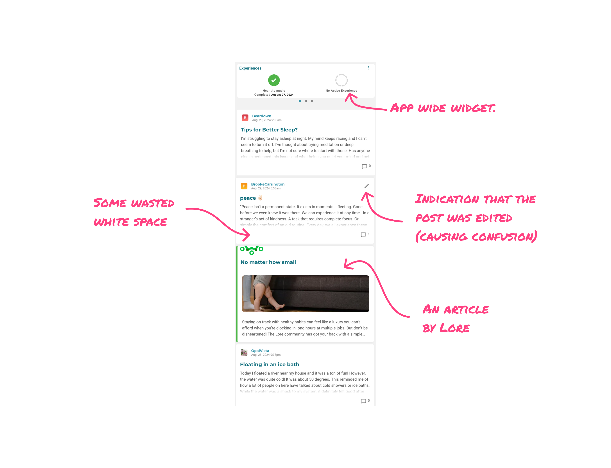

One feed, everything weighted the same
Open Lore and you’d scroll past a sleep-tips post, then a one-word reflection on peace, then a video about making friends, then a story about an ice bath — all equal, in whatever order they’d been posted.
That’s fine when the goal is keeping people scrolling. It’s the wrong model when the goal is helping someone feel less alone in something specific. Someone struggling with sleep had no way to find the other people talking about sleep.
They could see that people were reflecting, but not where their reflection belonged.
New users felt it hardest: land on a feed of strangers’ unrelated posts, find nothing that speaks to you, leave.

Ranking had already been tried
Before I joined the squad, the team had gone at this with ranking — and run into a wall. Ranking needs volume and context to work, and Lore had neither yet. They’d shelved it and shipped autolinking instead.
Autolinking worked — if you found a post first
Each post got a couple of auto-generated hashtags, tappable through search to reach related posts. A good concept with two problems: the tagging was inconsistent, and it was post-first. You had to stumble onto something that resonated before you could branch out from it. And the tags were specific enough that users often disagreed with them.
There was still no answer to the two questions underneath all of this: where do I belong here, and what is this community even about?
Hubs: lift the tag off the post
So we stopped treating the tag as a label on a post and started treating it as a place.
Hubs abstracted those post-level hashtags up a level — broad enough to hold a real conversation, and created only once there was enough content to sustain one. Not “Finding Strength in Meditation,” but Finding Strength and Meditation, each standing on its own. A post could route into more than one.

Autolinking made you find a post to find a place. Hubs made the place the starting point.
Discord’s model, without Discord’s backend
We took the shape from Discord: named places you drop into, each with its own ongoing conversation. What we couldn’t take was posting into one. Channel-scoped composition meant rebuilding how posts were created and stored, and that wasn’t a fight worth having yet.
So hubs stayed read-only lenses. You wrote a post the way you always had, and the backend routed it into whatever hubs fit — which it was already good enough to do. Users got somewhere to go without us rebuilding the system underneath them.
Five to start, then personalized
Every user got five hubs out of the gate, which shifted with their engagement over time. Five is enough to signal what the community is about without asking anyone to pick from a wall of options.
That was the real unlock: direction. Somewhere to go, and a decision to make about where.

Super users adopted it immediately
They used hub filters to track recurring topics, recognize familiar names, and reply with intention instead of posting into the void. The underlying theory held: given a way to find context, people reciprocated.
It missed the people who needed it most
Reading became place-based. Writing didn’t. A quiet user could drop into a hub, find the exact conversation they’d been looking for — and then still have to post into the general stream and hope it landed back where they’d found it.
Super users could hold that gap in their heads. New users couldn’t. Discovery still rewarded people who were already active and confident — the same users who didn’t need help finding belonging.
Hubs organized where content goes. They did nothing for who shows up.
Categorization organizes. It doesn’t onboard.
Hubs gave structure to conversations that already had momentum, but structure can’t create someone’s first reason to speak. The cold start — the blank-page moment — needed a different intervention. That’s where the next round of experiments picked up.